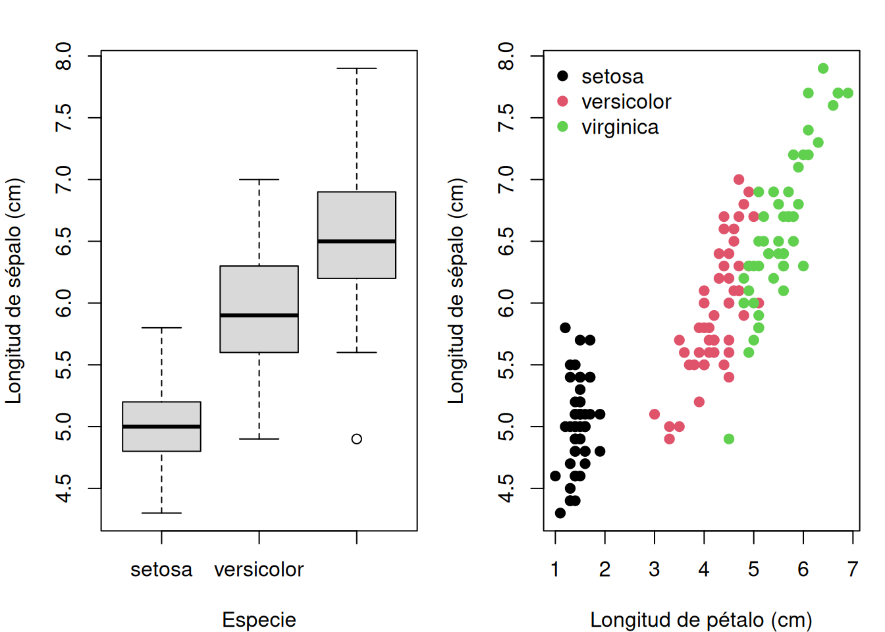
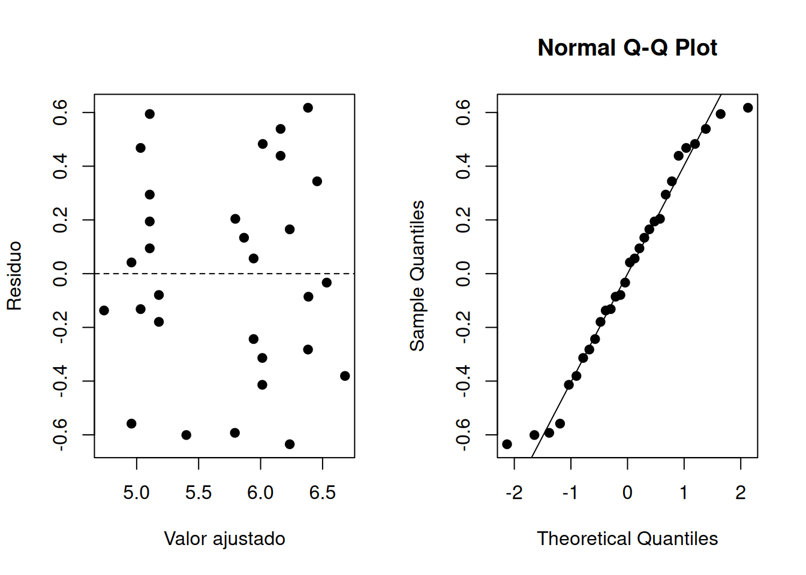

data(iris, package = "datasets")
U <- transform(iris, id = seq_len(nrow(iris)))
auditoria <- data.frame(
filas = nrow(U),
ids_unicos = length(unique(U$id)),
duplicados_completos = sum(duplicated(iris)),
faltantes = sum(is.na(U)),
longitudes_no_positivas = sum(U$Sepal.Length <= 0)
)
auditoria
#> filas ids_unicos duplicados_completos faltantes longitudes_no_positivas
#> 1 150 150 1 0 0
table(U$Species, useNA = "ifany")
#>
#> setosa versicolor virginica
#> 50 50 501 Del problema ecológico al diseño
1.1 Diseñar antes de observar
Una investigación ecológica comienza por decidir qué cantidad, en qué población, durante qué período y con qué unidad se quiere estimar. El diseño conecta pregunta, marco, selección, medición y análisis. Un intervalo estrecho no compensa una población mal delimitada ni una medición que responde a otra pregunta (Sutherland 2006; Manly y Navarro Alberto 2015).
Una declaración operativa útil tiene esta forma:
Estimar el parámetro de una variable en unidades elegibles, durante un período y dentro de una extensión definidos, mediante un procedimiento de selección y un protocolo de medición documentados.
1.2 Población, unidades y estimando
Sea \(U=\{1,\ldots,N\}\) una población finita y \(y_i\) el valor de la unidad \(i\). Tres estimandos habituales son
\[ Y=\sum_{i\in U}y_i,\qquad \bar Y=\frac{1}{N}\sum_{i\in U}y_i,\qquad P=\frac{1}{N}\sum_{i\in U}I(y_i\in A). \]
El denominador pertenece a la definición. Densidad de individuos por hectárea, biomasa por árbol y frecuencia por parcela no son versiones intercambiables de una misma cantidad.
- Población objetivo: conjunto al que se desea referir la conclusión.
- Población accesible: parte que el protocolo puede alcanzar.
- Marco: lista, mapa o red desde la cual se seleccionan unidades.
- Unidad de muestreo: elemento que recibe probabilidad de selección.
- Unidad de observación: elemento sobre el que se mide.
- Unidad de análisis: elemento que aporta una observación independiente.
- Estimando: cantidad poblacional definida antes de analizar.
Una parcela seleccionada puede contener muchos árboles observados. Si la selección ocurrió entre parcelas, los árboles internos son submuestras y no parcelas independientes. Esta separación evita pseudorreplicación.
1.3 Selección e incertidumbre
Un diseño probabilístico asigna probabilidades conocidas y positivas \(\pi_i=P(i\in s)\). El estimador de Horvitz–Thompson para el total es
\[ \widehat Y_{HT}=\sum_{i\in s}\frac{y_i}{\pi_i}. \]
En muestreo aleatorio simple sin reemplazo (MAS), \(\pi_i=n/N\) y la media se estima con \(\bar y_s\). Su varianza estimada es
\[ \widehat V_p(\bar y_s)=\left(1-\frac nN\right)\frac{s_y^2}{n}. \]
El factor \(1-n/N\) reconoce que no se reemplazan unidades de una población finita. No corrige cobertura incompleta, no respuesta, no detección ni error de medición (Lohr 2022). Un intervalo basado en el diseño es \(\bar y_s\pm t_{n-1,0.975}\widehat{SE}\).
El error cuadrático medio separa variabilidad y sesgo:
\[ MSE(\widehat\theta)=V(\widehat\theta)+ \{E(\widehat\theta)-\theta\}^2. \]
Una muestra de conveniencia grande puede ser estable y, al mismo tiempo, estar centrada lejos del parámetro. La aleatorización protege contra preferencias de selección; la auditoría del protocolo protege contra errores de observación.
1.4 Arquitectura de un estudio defendible
- Formular una pregunta y un estimando primario.
- Delimitar población, extensión, período, elegibilidad y dominios.
- Auditar vacíos, duplicados e inaccesibilidad del marco.
- Identificar unidad de muestreo, observación y análisis.
- Escribir reglas de selección, reemplazo y medición.
- Vincular el estimando con su estimador y su incertidumbre.
- Anticipar heterogeneidad, dependencia y detectabilidad.
- Registrar control de calidad, desviaciones y límites de inferencia.
1.5 Aplicación reproducible: flores de iris
datasets::iris contiene 150 registros morfológicos de flores, 50 por cada una de tres especies. Es un conjunto real histórico incorporado en R. Se desconoce un marco probabilístico que permita representar todas las poblaciones naturales, las filas no incluyen sitio, fecha, individuo ni incertidumbre instrumental, y algunas observaciones de Iris versicolor y I. virginica proceden del mismo origen. Por ello lo tratamos solo como población finita de registros, no como una muestra representativa de las especies.
El estimando primario es la longitud media de sépalo de los 150 registros. La unidad de muestreo, observación y análisis es una fila. La especie es información auxiliar y define dominios.
1.5.1 Procedencia, carga y auditoría
Los duplicados completos no se eliminan: pueden corresponder a flores distintas con las mismas medidas redondeadas. Sin identificadores originales no es posible distinguir repetición biológica de duplicación administrativa; excluirlos cambiaría la población definida.
1.5.2 Exploración orientada al diseño
resumen <- aggregate(
cbind(Sepal.Length, Sepal.Width, Petal.Length, Petal.Width) ~ Species,
data = U,
FUN = function(x) c(n = length(x), media = mean(x), de = sd(x),
minimo = min(x), maximo = max(x))
)
resumen
#> Species Sepal.Length.n Sepal.Length.media Sepal.Length.de
#> 1 setosa 50.0000000 5.0060000 0.3524897
#> 2 versicolor 50.0000000 5.9360000 0.5161711
#> 3 virginica 50.0000000 6.5880000 0.6358796
#> Sepal.Length.minimo Sepal.Length.maximo Sepal.Width.n Sepal.Width.media
#> 1 4.3000000 5.8000000 50.0000000 3.4280000
#> 2 4.9000000 7.0000000 50.0000000 2.7700000
#> 3 4.9000000 7.9000000 50.0000000 2.9740000
#> Sepal.Width.de Sepal.Width.minimo Sepal.Width.maximo Petal.Length.n
#> 1 0.3790644 2.3000000 4.4000000 50.0000000
#> 2 0.3137983 2.0000000 3.4000000 50.0000000
#> 3 0.3224966 2.2000000 3.8000000 50.0000000
#> Petal.Length.media Petal.Length.de Petal.Length.minimo Petal.Length.maximo
#> 1 1.4620000 0.1736640 1.0000000 1.9000000
#> 2 4.2600000 0.4699110 3.0000000 5.1000000
#> 3 5.5520000 0.5518947 4.5000000 6.9000000
#> Petal.Width.n Petal.Width.media Petal.Width.de Petal.Width.minimo
#> 1 50.0000000 0.2460000 0.1053856 0.1000000
#> 2 50.0000000 1.3260000 0.1977527 1.0000000
#> 3 50.0000000 2.0260000 0.2746501 1.4000000
#> Petal.Width.maximo
#> 1 0.6000000
#> 2 1.8000000
#> 3 2.5000000
op <- par(mfrow = c(1, 2), mar = c(4, 4, 2, 1))
boxplot(Sepal.Length ~ Species, data = U, col = "grey85",
xlab = "Especie", ylab = "Longitud de sépalo (cm)")
plot(U$Petal.Length, U$Sepal.Length, pch = 19,
col = as.integer(U$Species), xlab = "Longitud de pétalo (cm)",
ylab = "Longitud de sépalo (cm)")
legend("topleft", levels(U$Species), col = 1:3, pch = 19, bty = "n")
par(op)La separación entre especies muestra que el orden o una selección concentrada en un dominio puede alterar la estimación. La relación con longitud de pétalo sugiere un auxiliar, pero no reemplaza la selección probabilística.
1.5.3 Selección y estimación por MAS
set.seed(1101)
N <- nrow(U)
n <- 30
ids_mas <- sample(U$id, n, replace = FALSE)
s_mas <- U[match(ids_mas, U$id), ]
ybar <- mean(s_mas$Sepal.Length)
se_mas <- sqrt((1 - n / N) * var(s_mas$Sepal.Length) / n)
ic_mas <- ybar + qt(c(0.025, 0.975), n - 1) * se_mas
resultado_mas <- data.frame(
estimando = "media de longitud de sépalo en 150 registros",
estimacion = ybar, SE = se_mas, LI = ic_mas[1], LS = ic_mas[2]
)
round(resultado_mas[-1], 3)
#> estimacion SE LI LS
#> 1 5.73 0.114 5.497 5.963Cada fila seleccionada representa \(N/n=5\) filas del marco. El intervalo describe la variación que produciría repetir este MAS. No incluye incertidumbre sobre la procedencia, representatividad externa, redondeo o identificación taxonómica.
1.5.4 Dominios y modelo descriptivo
por_especie <- do.call(rbind, lapply(split(s_mas, s_mas$Species), function(z) {
Nh <- sum(U$Species == z$Species[1])
nh <- nrow(z)
data.frame(especie = z$Species[1], Nh = Nh, nh = nh,
media = mean(z$Sepal.Length),
SE = if (nh > 1)
sqrt((1 - nh / Nh) * var(z$Sepal.Length) / nh) else NA)
}))
por_especie
#> especie Nh nh media SE
#> setosa setosa 50 12 5.075000 0.09423938
#> versicolor versicolor 50 11 6.154545 0.15634672
#> virginica virginica 50 7 6.185714 0.10403427
modelo <- lm(Sepal.Length ~ Species + Petal.Length, data = s_mas)
coef(summary(modelo))
#> Estimate Std. Error t value Pr(>|t|)
#> (Intercept) 3.9997205 0.3725132 10.737124 4.724720e-11
#> Speciesversicolor -1.0827438 0.7318622 -1.479437 1.510390e-01
#> Speciesvirginica -1.7429458 0.9595747 -1.816373 8.086087e-02
#> Petal.Length 0.7373345 0.2431156 3.032855 5.433433e-03
par(mfrow = c(1, 2))
plot(fitted(modelo), residuals(modelo), pch = 19,
xlab = "Valor ajustado", ylab = "Residuo")
abline(h = 0, lty = 2)
qqnorm(residuals(modelo), pch = 19)
qqline(residuals(modelo))
par(mfrow = c(1, 1))El modelo describe asociaciones dentro de la muestra: a longitud de pétalo fija, los coeficientes de especie son diferencias condicionales. No identifican causas ni amplían la población de inferencia. Los gráficos permiten detectar curvatura, varianza desigual y observaciones influyentes; con solo 30 filas, cualquier patrón debe interpretarse con cautela.
1.5.5 Evaluación del diseño y diagnóstico del intervalo
Como se conoce el marco completo, se puede repetir el mecanismo de selección sin inventar datos biológicos. Esta repetición evalúa el diseño sobre valores reales.
set.seed(1102)
B <- 2000
verdad <- mean(U$Sepal.Length)
evaluar_mas <- function() {
z <- U$Sepal.Length[sample.int(N, n)]
est <- mean(z)
se <- sqrt((1 - n / N) * var(z) / n)
c(est = est, se = se,
cubre = abs(est - verdad) <= qt(0.975, n - 1) * se)
}
rep_mas <- t(replicate(B, evaluar_mas()))
c(sesgo = mean(rep_mas[, "est"] - verdad),
DE = sd(rep_mas[, "est"]),
SE_medio = mean(rep_mas[, "se"]),
cobertura = mean(rep_mas[, "cubre"]),
RMSE = sqrt(mean((rep_mas[, "est"] - verdad)^2)))
#> sesgo DE SE_medio cobertura RMSE
#> 0.0018200 0.1326946 0.1348531 0.9535000 0.1326739El sesgo cercano a cero es consecuencia del MAS sobre este marco. La cercanía entre la desviación de estimaciones y el SE medio valida la fórmula para este mecanismo; la cobertura diagnostica la aproximación \(t\), no la calidad externa del archivo.
1.5.6 Sensibilidad a selección y esfuerzo
set.seed(1103)
comparar <- replicate(B, {
mas <- mean(U$Sepal.Length[sample.int(N, n)])
inicio <- sample.int(N - n + 1, 1)
bloque <- mean(U$Sepal.Length[inicio:(inicio + n - 1)])
c(MAS = mas, bloque_contiguo = bloque)
})
t(apply(comparar, 1, function(x)
c(sesgo = mean(x - verdad), DE = sd(x),
RMSE = sqrt(mean((x - verdad)^2)))))
#> sesgo DE RMSE
#> MAS -0.003191667 0.1317017 0.1317074
#> bloque_contiguo 0.003813333 0.5402549 0.5401332
n_grid <- c(10, 20, 30, 50, 80, 120)
S2 <- var(U$Sepal.Length)
data.frame(
n = n_grid,
fraccion = n_grid / N,
SE_esperado = sqrt((1 - n_grid / N) * S2 / n_grid),
semiamplitud = qnorm(0.975) *
sqrt((1 - n_grid / N) * S2 / n_grid)
)
#> n fraccion SE_esperado semiamplitud
#> 1 10 0.06666667 0.25297838 0.49582852
#> 2 20 0.13333333 0.17237571 0.33785018
#> 3 30 0.20000000 0.13522263 0.26503149
#> 4 50 0.33333333 0.09561684 0.18740556
#> 5 80 0.53333333 0.06324460 0.12395713
#> 6 120 0.80000000 0.03380566 0.06625787El bloque contiguo es sensible al orden histórico por especie y no tiene la protección del MAS. Aumentar \(n\) reduce incertidumbre, con ganancias marginales decrecientes. Ninguna de las dos sensibilidades resuelve la falta de sitio, fecha, sexo, etapa vital o marco de selección original.
1.6 Interpretación y reproducibilidad
La estimación principal caracteriza exclusivamente los 150 registros. Las diferencias por especie y el modelo ayudan a entender heterogeneidad, pero no convierten el archivo en una muestra de poblaciones silvestres. Una conclusión reproducible debe conservar semilla, versión de R, definición de variables, identificadores seleccionados y reglas de exclusión.
list(
archivo = "datasets::iris",
version_R = R.version.string,
semilla_MAS = 1101,
ids_seleccionados = sort(ids_mas),
N = N,
n = n,
estimando = "media de Sepal.Length en las 150 filas"
)
#> $archivo
#> [1] "datasets::iris"
#>
#> $version_R
#> [1] "R version 4.5.2 (2025-10-31)"
#>
#> $semilla_MAS
#> [1] 1101
#>
#> $ids_seleccionados
#> [1] 2 11 16 23 25 33 34 41 43 44 47 49 51 52 60 63 64 66 67
#> [20] 76 77 95 97 101 104 105 111 114 120 139
#>
#> $N
#> [1] 150
#>
#> $n
#> [1] 30
#>
#> $estimando
#> [1] "media de Sepal.Length en las 150 filas"
sessionInfo()
#> R version 4.5.2 (2025-10-31)
#> Platform: x86_64-pc-linux-gnu
#> Running under: Ubuntu 24.04.4 LTS
#>
#> Matrix products: default
#> BLAS: /usr/lib/x86_64-linux-gnu/openblas-pthread/libblas.so.3
#> LAPACK: /usr/lib/x86_64-linux-gnu/openblas-pthread/libopenblasp-r0.3.26.so; LAPACK version 3.12.0
#>
#> locale:
#> [1] LC_CTYPE=C.UTF-8 LC_NUMERIC=C LC_TIME=C.UTF-8
#> [4] LC_COLLATE=C.UTF-8 LC_MONETARY=C.UTF-8 LC_MESSAGES=C.UTF-8
#> [7] LC_PAPER=C.UTF-8 LC_NAME=C LC_ADDRESS=C
#> [10] LC_TELEPHONE=C LC_MEASUREMENT=C.UTF-8 LC_IDENTIFICATION=C
#>
#> time zone: UTC
#> tzcode source: system (glibc)
#>
#> attached base packages:
#> [1] stats graphics grDevices datasets utils methods base
#>
#> loaded via a namespace (and not attached):
#> [1] compiler_4.5.2 fastmap_1.2.0 cli_3.6.5 htmltools_0.5.9
#> [5] tools_4.5.2 yaml_2.3.12 codetools_0.2-20 rmarkdown_2.30
#> [9] knitr_1.51 jsonlite_2.0.0 xfun_0.56 digest_0.6.39
#> [13] rlang_1.1.7 renv_1.2.4 evaluate_1.0.51.7 Actividad propuesta para el lector
Use el conjunto real datasets::ToothGrowth para estimar la longitud media de odontoblastos en el marco completo y por suplemento. Documente procedencia y limitaciones experimentales, audite tipos, faltantes, duplicados y balance, defina unidad y estimando, explore distribuciones, extraiga un MAS reproducible y estime media, SE e intervalo con corrección finita. Compare MAS con muestreo estratificado por suplemento mediante repetición sobre los datos observados, diagnostique cobertura y RMSE, ajuste un modelo descriptivo con dosis y suplemento, revise residuos y observaciones influyentes, y evalúe sensibilidad al tamaño de muestra. Interprete qué incertidumbre pertenece al nuevo mecanismo de selección y cuál no puede recuperarse del archivo histórico.